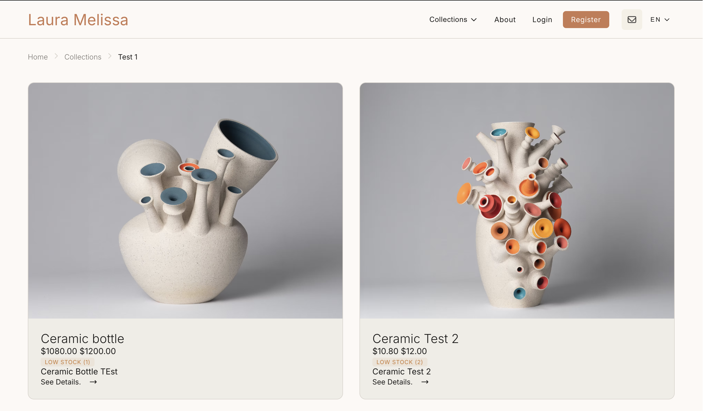
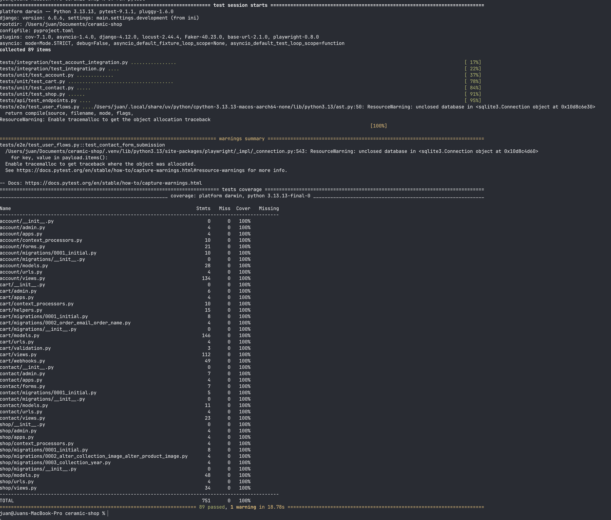
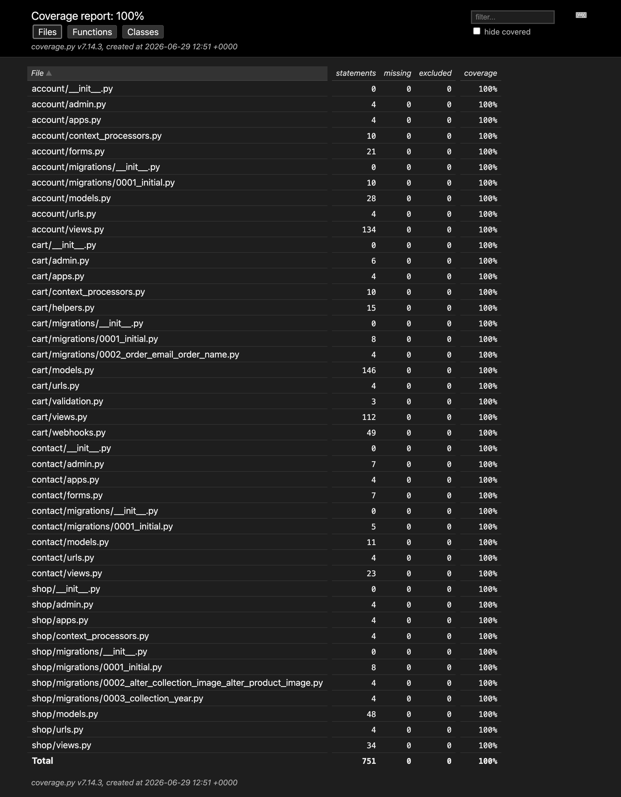
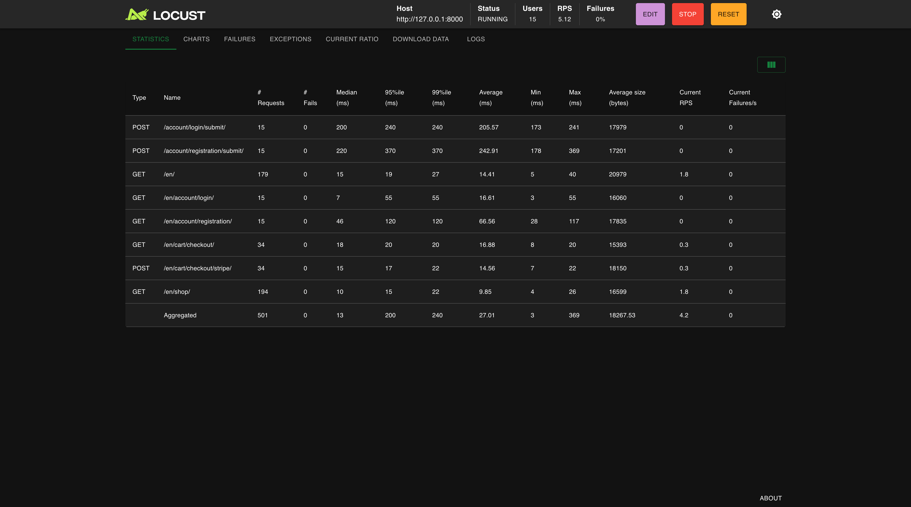

Ceramic Shop E-Commerce
QA Automation Showcase for a Django E-Commerce Platform

Tech Stack
Application
Integrations
Testing
Quality & CI
Environment
Why I Built This
Most QA portfolios stop at testing forms and login pages. I wanted to test something that actually has stakes: real money moving through a real payment flow. So I built a full ceramic e-commerce store, then treated it like a production app a QA team would be accountable for — writing tests for the boring, easy-to-skip parts (does the cart total update correctly when you change quantity?) and the genuinely hard parts (does the app correctly handle a Stripe webhook that arrives out of order, or fails to arrive at all?). The result is a test suite that doesn't just check that pages load — it checks that money handling is correct under realistic and adversarial conditions.
Project Details
An online ceramic store built to simulate a real production e-commerce system. It includes user accounts, shopping cart functionality, and Stripe payment integration. The main focus of the project is to demonstrate how quality assurance and automated testing can be applied across critical user journeys like checkout and payments.
My Role & Focus
Focused on building a complete QA automation strategy for the application, including test environment setup, external payment simulation, and validation of end-to-end user flows under realistic conditions.
Key Achievements
- Reached 100% test coverage across core application logic.
- Built maintainable end-to-end browser tests using Playwright and the Page Object Model.
- Validated Stripe payment flows, including asynchronous webhook processing.
- Performed load testing with Locust, confirming a stable 17ms average response time with no failures.
- Implemented CI quality checks using GitHub Actions and Lefthook to enforce linting and testing before commits.
What I tested — and why it mattered
| Test Type | Tool | What I Tested |
|---|---|---|
| Cart & Pricing Logic | pytest | Cart totals recalculate correctly when quantity changes, discount codes apply only once, and the order total matches the Stripe charge amount before any request leaves the app. |
| Stripe Checkout Session | pytest + Stripe test keys | Checkout sessions are created with the right line items and currency. Cancellation mid-flow leaves no orphaned orders in the database. |
| Stripe Webhook Handling | pytest + unittest.mock | payment_intent.succeeded marks the order as paid. A failed payment leaves the order in 'pending'. An invalid webhook signature is rejected — the handler never trusts the payload without verifying the signature first. |
| User Account Flows | Playwright (Page Object Model) | A new user can register, browse products, add items to the cart, complete checkout with a Stripe test card, and see the confirmed order in their account history — all in a single automated browser session. |
| Critical Page Health | Playwright | Smoke tests verify that every critical page loads successfully with no unexpected errors. The suite confirms key user-facing routes remain accessible after each deployment and runs in under 3 seconds on every CI push. |
| Backend under load | Locust | 50 concurrent virtual users browsing and adding to cart for 5 minutes. Confirmed 17ms average response time and 0% failure rate — the Stripe session creation endpoint stayed stable under sustained parallel requests. |
Proof, Not Just Claims
Screenshots from the actual test runs — the terminal output, the coverage report, and the load test dashboard behind the numbers above.


